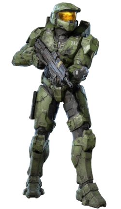
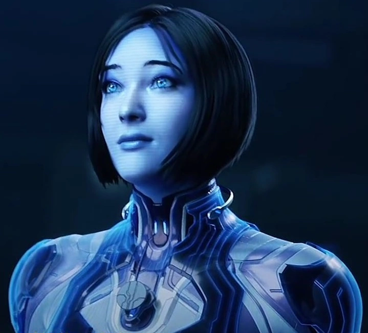
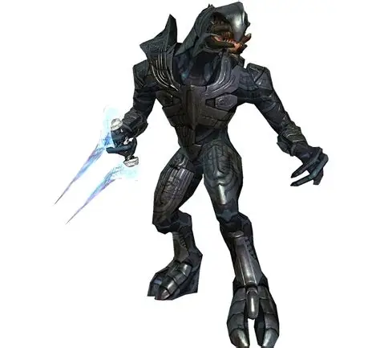

Sobre o jogo!
Halo é uma franquia de jogos de tiro em primeira pessoa, produzida pela Microsoft. A série acompanha o Master Chief, um supersoldado que enfrenta diversas ameaças alienígenas em um universo futurista. O primeiro jogo, Halo: Combat Evolved, foi lançado em 2001 para o Xbox e se tornou um dos grandes símbolos da marca.
Personagens Principais!

Master Chief

Cortana
